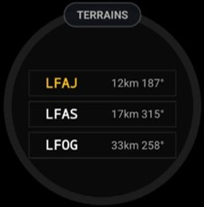
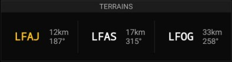

Possibilités
- Les 3 aérodromes les plus proches : code OACI, distance, cap.
- Triés par proximité.
- Base complète hors-ligne : les terrains proches proviennent de l'ensemble des aérodromes (données OpenAIP embarquées avec la carte), pas seulement de votre liste — utile en voyage. Les héliports, terrains privés/ULM et militaires sont écartés.
- Un terrain de votre liste proche garde ses infos enrichies (circuit, VAC téléchargée).
- Pour un aérodrome proche hors de votre liste : ouvrir sa VAC à la demande (SIA) ou l'ajouter à vos terrains depuis la liste complète.
Gestes supportés
Double-tap sur un terrain : ouvrir sa carte VAC
Appui long : liste complète des terrains

